Basic Usage
Basic Usage
In this document, we’ll explore the essentials of IDA capabilities to kickstart your journey and disassemble your first binary file.
Prerequisites
Your IDA instance is installed and running.
Before you begin
What files and processors are supported?
IDA natively recognizes plenty of file formats and processors.
If you later realize that’s not enough, you can always use one of our community plugins that add additional formats or processor types or try to write your own with C++ SDK.
What are IDA database files?
IDA stores the analysis results in the IDA Database files (called IDB), with the extension .i64. This allows you to save your work and continue from the same point later. After loading a file at the beginning, IDA does not require access to the binary.
Any modifications you make are saved in the database and do not affect the original executable file.
Dive deeper
- Blog: :pencil: Check what exactly IDB contains in Igor’s tip of the week about IDA database.
What decompilers can I work with?
IDA provides decompilers designed to work with multiple processor architectures. The number of decompilers and their type (local or remote) available in your IDA instance depends on your chosen product and subscription plan and affects your ability to produce C-like pseudocode.
Where can I find exemplary binaries to work with?
Check CrackMe, from where you can download executable files to test your reverse engineering skills.
Part 1: Loading your file
When you launch IDA, you will see a Quick Start dialog that offers three ways to continue. For now, we’ll focus on loading a new file and proceeding to disassembly results.
- Launch IDA and in the Quick start dialog (1), click New.
- Specify the path for your binary file.
- In the Load a new file dialog (2), IDA presents loaders that are suited to deal with a selected file. Accepting the loader default selection and then the processor type is a good strategy for beginners. Click OK to confirm your selection.
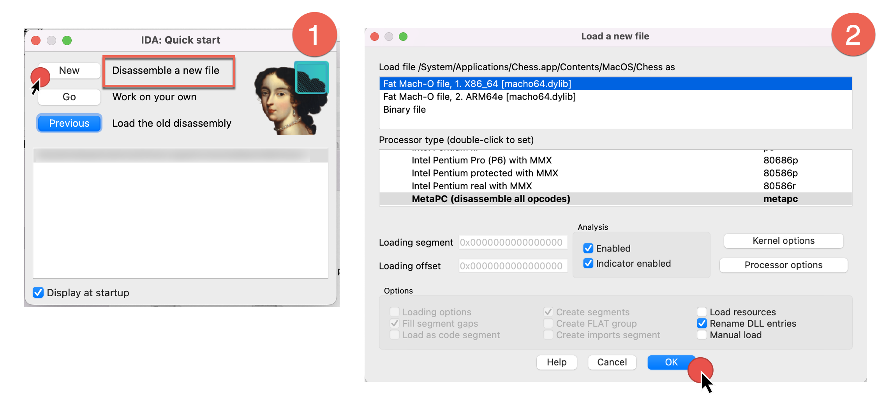
- IDA begins autoanalysis of your binary file.
After completion, you will be present with the default IDA desktop layout, that we’ll describe in the next part.
Dive deeper
- Video: :video_camera: Watch different ways of loading files in our channel.
Part 2: UI overview
After autoanalysis is done, you’ll see the main IDA desktop with the initial results. Let’s examine the default desktop layout and commonly used UI elements.
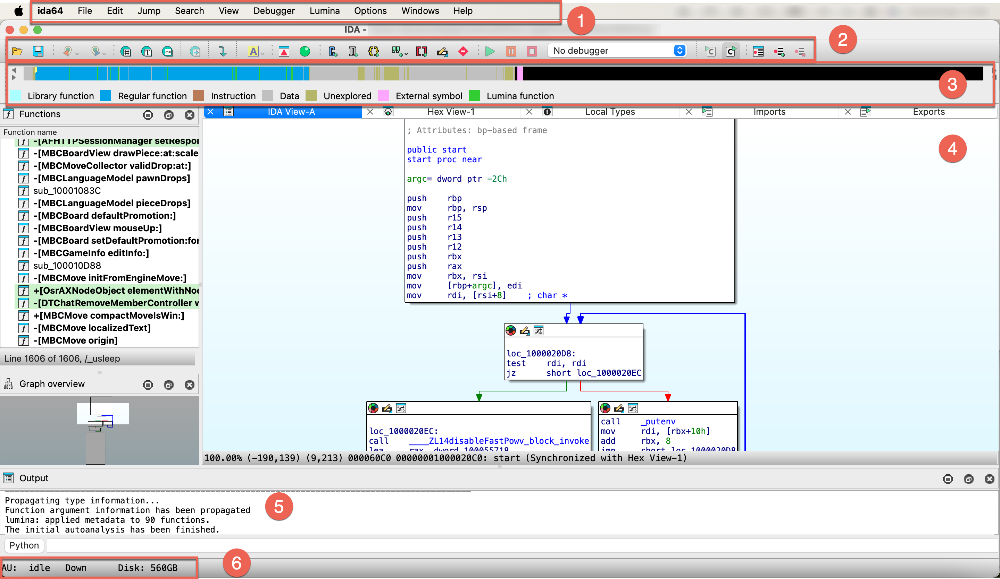
- Main menu bar (1)
- Toolbar (2)
- Navigation band (3)
- Subviews (4)
- Output (5)
- Status bar (6)
Main menu bar
The main menu bar provides quick access to essential features. Moreover, almost all menu commands can be quickly accessible via customizable shortcuts.
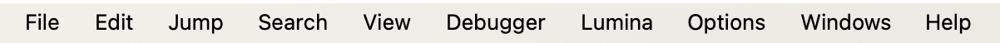
For a handy cheatsheet of all commands and their hotkeys, check Options -> Show command palette….
Dive deeper
- Docs: :book: Check our User Guide for a comprehensive description of all menu items.
Toolbar
Below the main menu bar, you will see a toolbar with icons that give you quick access to common functionalities (available also via the main menu/shortcuts). It has just one line by default, but you can customize it by adding or rearranging your actions.
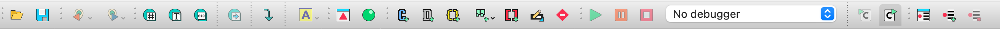
Dive deeper
- Video: :video_camera: Curious about practical ways to set up your toolbar? Watch our video tutorial.
Navigation band
The navigation band shows the graphical representation of the analyzed binary file and gives a short overview of its contents and which areas may need your attention. The yellow arrow (indicator) shows where the cursor is currently positioned in the disassembly view.
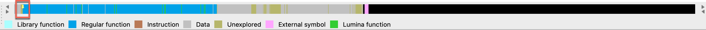
As you’ll soon recognize, the colors used in the nav band match those in other views.
Dive deeper
- Blog: :pencil: A detailed navigation band overview with the full colors legend you can found in Igor’s tip of the week.
Output
The output window is a place where various messages and logs are displaying, often describing what currently IDA is doing, like analyzing data or running a script. In the CLI box you can type commands in IDC language or IDAPython.
Status bar
At the bottom left corner of the IDA window, you can see the status bar, which contains:
- analysis indicator
AU, which shows the actual status of autoanalysis (1). In our case, it isidle, which means the autoanalysis is already finished. - search direction indicator (2)
- remaining free disk space (3)
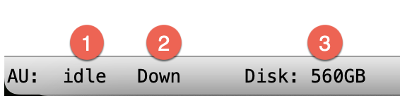
Right-clicking on the status bar brings up a context menu that allows you to reanalyze the program.
Dive deeper
- Docs: :book: To check all possible values and their meaning, take a look at analysis options.
Subviews
The subviews are one of the most prominent parts of your everyday work with IDA. These additional views (behaving like tabs) give a different perspective and information on the binary file, but the number of native IDA subviews may be a bit overwhelming. Here, we will focus on the most versatile and common subviews for beginners, where you’ll spend most of the time, like:
- IDA View
- Pseudocode
- Hex Dump View
- Local Types
- Functions View
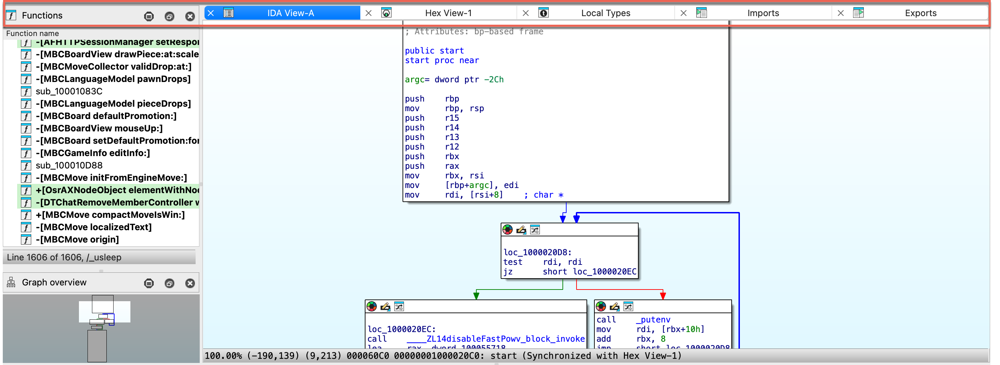
IDA View / Disassembly Window
When autoanalysis is done, you will see a graph view inside an IDA View by default. This flowchart graph should help you to understand the flow of the functions.
{% hint style=“info” %} The graph view is available only for the part of the binary that IDA has recognized as functions. {% endhint %}
IDA view has three modes:
- graph view (1), that shows instructions grouped in blocks,
- linear view (2), that lists all instructions and data in order of their addresses,
- and proximity view (3), which allows you to see relations between functions, global variables, and other parts of the program.
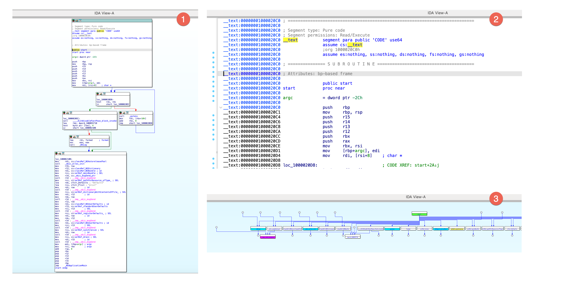
{% hint style=“info” %}
Press Space to switch between graph and linear mode. Proximity view is available from the context menu in IDA view.
{% endhint %}
Dive deeper
- Video: :video_camera: Check our video tutorial covering the basics of graph view.
- Blog: :pencil: Read the graph mode overview in Igor’s tip of the week.
Hex View Window
In hex view, you can see the raw bytes of the program’s instructions.
There are two ways of highlighting the data in this view:
- Text match highlight, which shows matches of the selected text anywhere in the views.
- Current item highlight, which shows the bytes group constituting the current item.
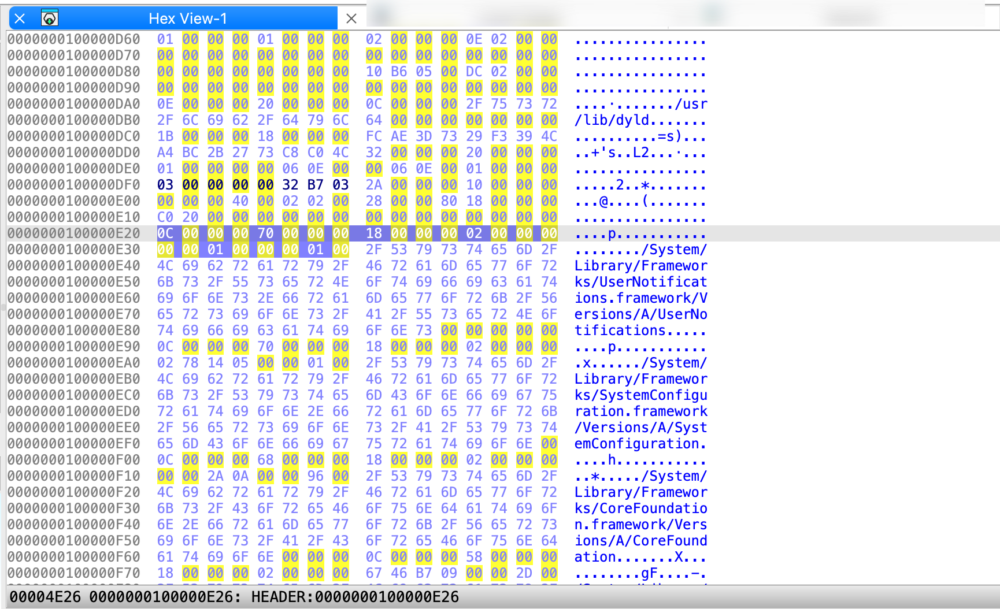
{% hint style=“info” %} The IDA view, pseudocode, and hex view can be synchronized, meaning that they highlight the same part of the analyzed program, and changes made inside one of the views are visible in the others. {% endhint %}
Dive deeper
- Video: :video_camera: Listen about hex view and others in our video tutorial.
- Blog: :pencil: Detailed overview of the hex view you can read in Igor’s tip of the week.
Pseudocode Window
Generated by the famous F5 shortcut, the pseudocode shows the assembly language translated into human-readable, C-like pseudocode. Click Tab to jump right into the Pseudocode view.
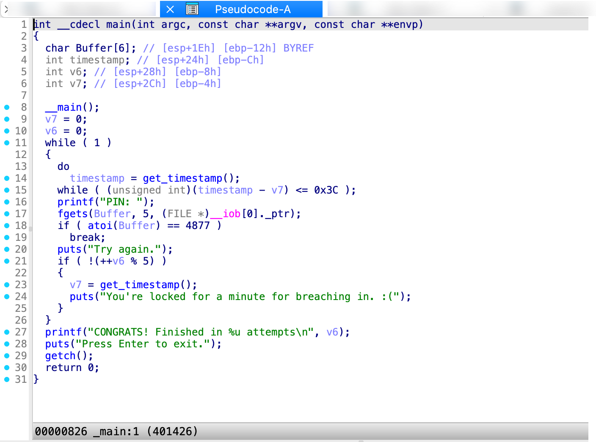
Local Types Window
This view shows the high-level types used in databases, like structs or enums.
Dive deeper
- Docs: :book: Check our manual giving an overview of Local Types window.
Functions Window
This window displays all the functions recognized by IDA, along with key details for each:
- Function name
- Segment the segment that contains the function
- Start: the function starting address
- Length: the size of the function in bytes
- Local: the amount of stack space taken by local variables
- Arguments: the amount of stack space taken by arguments
By default, the entire window is not visible, so you may scroll horizontally to see the hidden elements. As you probably noticed, the colors in Functions window match the colors in navigation band; in our example, green highlighting shows functions recognized by Lumina.
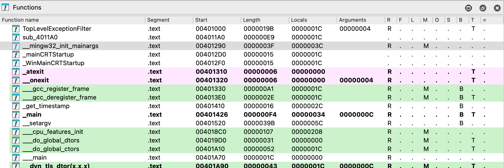
This view is read-only, but you can automatically synchronize the function list with the IDA view, pseudocode, or hex view. Click to open the context menu and select Turn on synchronization.
Dive deeper
- Docs: :book: Read the manual explaining all of the function window columns in detail.
- Video: :video_camera: Watch our video tutorial exploring the functions view.
Part 3: Basic navigation
A crucial step in mastering IDA is learning how to navigate quickly to specific locations in the output. To help you get started, we’ll cover essential commands and hotkeys commonly used for efficient navigation in IDA.
Double-click and jump to the location
When you double-click on an item, such as a name or address, IDA automatically jumps to that location and relocate the display.
Jump to address
- Go to Jump -> Jump to address.. or press
Ghotkey - Enter the item name or hex address in the dialog box, then click OK.
To jump back to the previous position, press Esc. To jump to the next position, press Ctrl + Enter. You can also navigate using the arrows in the toolbar.
See the list of cross-references
- Position the cursor on a function or instruction, then go to Jump -> Jump to xref to operand… or press
Xto see the dialog with listed all cross-references to this identifier. - Select an item from the list and click OK to jump to that location.
Dive deeper
- Video: :video_camera: Explore the rest of the jump commands in our video tutorial
Part 4: Manipulate your disassembly results
Now that the initial autoanalysis is done and you’ve mastered the basics of navigation, it’s time to explore the basic interactive operations that reveal the true power of IDA in transforming your analysis.
Rename a stack variable
One of the first steps you might take is to enhance readability by assigning meaningful names to local or global variables, but also functions, registers and other objects that IDA initially assigned a dummy name.
- In the IDA View, right-click on the variable you want to rename and click Rename or press
Nwhen the variable is cursor-highlighted. - In the newly opened dialog, insert a new name and click OK.
If at any point you want to go back to the original dummy name given by IDA, leave the field blank and click OK. It will reset the name to the default one.
{% hint style=“info” %} Once you change the name, IDA will propagate the changes through the decompiler and Pseudocode view. {% endhint %}
Dive deeper
- Video: :video_camera: Watch our step-by-step tutorial on renaming techniques.
- Blog: :pencil: Check Igor’s tips of the week for expert advice on renaming.
Add a comment
Adding comments may be a useful way to annotate your work.
- Highlight the line where you want to insert a comment and press
:. - In the dialog box, type your comment (you can use multiple lines) and click OK. This will add a regular (non-repeatable) comment to the location.
{% hint style=“info” %} If you want to add a repeatable comment in every location that refers to the original comment, press ‘;’. {% endhint %}
Dive deeper
- Video: :video_camera: Watch our tutorial about commenting.
Part 5: Customizing IDA
Nearly every UI element is customizable, allowing you to rearrange and align widgets to suit your habits. You can save your personalized desktop layout by going to Windows -> Save desktop.
Most of the basic appearance you can change under Options menu.
- To change the colors or theme, go to Options -> Colors.
- To change the font, go to Options -> Fonts.
If you need more control over customization settings, you may check the IDA configuration files.
Part 6: Debug your file
If you are ready to delve into dynamic analysis and start debugging your programs, here are some key steps to get you started:
- Select the right debugger and complete the setup: Go to Debugger -> Select debugger… and pick up one of the available debuggers. Under Debugger -> Debugger options, you can configure the setup in detail.
- Add breakpoints: Right-click on the line where you want to stop the execution and select Add breakpoint from the context menu, or press
F2. - Start the process: Run the debugging session by pressing
F9or click a green arrow on the tooltip.
Dive Deeper
- Docs: :book: Read our User Guide for local and remote debugging manuals, or check step-by-step tutorials for specific debuggers.
Part 7: Install a plugin
One of the most common way of extending IDA capabilities is to use one of our community-developed plugins.
Where can I find IDA plugins?
You can find a variety of plugins in the official Hex-Rays plugin repository, or via HCLI and Plugin Manager.
{% hint style=“success” %}
HCLI Commands | See HCLI Docs
hcli plugin search
{% endhint %}
Installing your plugin
For this guide purposes, we’ll walk you through general installation steps.
{% hint style=“info” %} The installation process can vary depending on the plugin and some of them may required installing dependencies or further configuration. Don’t hesitate to refer to the specific instructions provided by the plugin author. {% endhint %}
Quick alternative
{% hint style=“success” %}
HCLI Commands | See HCLI Docs
hcli plugin install <plugin-name>
{% endhint %}
Load your plugin
- Copy your plugin folder to the plugins directory inside your IDA installation directory.
- Alternatively, you can load the plugin from the command line in IDA by using File -> Script file… and selecting
app.entry.pyfile.
Run your plugin
- Navigate to Edit -> Plugins -> your_plugin_name or use the assigned hotkey.
{% hint style=“info” %} You may need to restart IDA to see your plugin in the list. {% endhint %}
Dive deeper
- Docs: :book: Want to learn about writing your own plugins?
- For an easy entry point, check our Domain API.
- Need more low-level control? Check our Developer Guide on how to create a plugin in IDAPython or with C++ SDK.
Key hotkeys cheatsheet
Here’s a handy list of all of the shortcuts we used so far.
SpaceSwitches between graph and linear mode in the IDA ViewF5Generates pseudocodeTabJumps into pseudocode ViewGOpens Jump to address dialogEscJumps back to the previous positionCtrl + EnterJumps to the next positionXShows the list of all cross-referencesNOpens dialog to rename the current item;Adds repeatable comment:Adds regular comment
Domain API: Beginner-friendly scripting and plugin development in IDA
Looking to extend IDA’s capabilities with your own scripts or plugins? Meet the Domain API—a high-level, Pythonic interface designed to simplify development and make interacting with IDA more intuitive.
- Check Getting Started with the Domain API, and
- Browse Real-life Domain API Examples to kickstart.